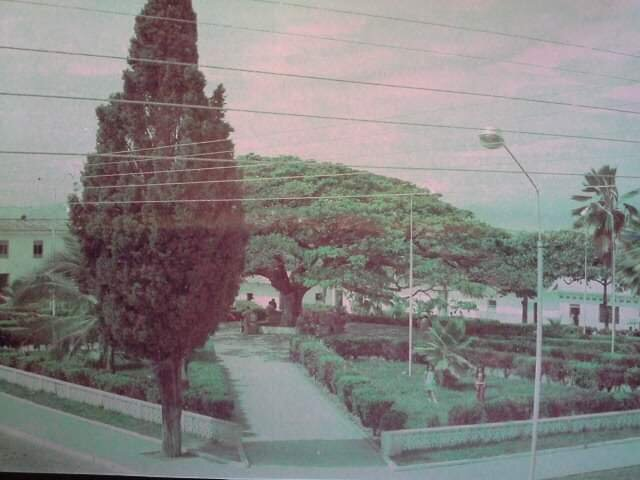

La fundación de Íquira data de 1694 por orden de Francisco Martínez de Ospina quien le da el nombre de San Francisco de Íquira a una localidad levantada en lo que actualmente se conoce con el nombre de callejón, exactamente son los territorios de las fincas El Carmen, La Mestiza y San Mateo. Sus primeros moradores fueron los indios Paeces, que por sospecha de un posible ataque de los indios Pijaos decidieron trasladar la población al sitio que ocupa en la actualidad por ser un terreno alto, con posición estratégica para divisar al enemigo. Por eso se le da el nombre de “Montes Altos o Atalaya” como significado que las voces primitivas le daban a la palabra Íquira. Con el propósito de difundir la fé católica entre los aborígenes en 1656 los padres Franciscanos fundan un centro de doctrina y se le impone a San Francisco de Asís como su patrono. En 1672 los capitanes Francisco Perdomo de Betancourt, Francisco Trujillo y Castro, Alfonso de Montealegre y otros, trataron de elevar el caserío a la categoría de villa con el nombre de Callejón de Íquira. Este intento no prospera razón por la cual el pueblo es abandonado como hacían los Españoles en todos los pueblos que no aceptaban sus caprichos.
En 1887, Íquira es ascendido a la categoría de municipio y hacia 1907 se inicia la construcción del templo con la participación de todos los vecinos, quienes estaban liderados por el sacerdote Lucas Ortiza; iniciativa que se vio aplazada por la guerra de los 1.000 días. Como consecuencia de la mencionada guerra y ante los estragos dejados por esta se consideró la posibilidad de bajar a Íquira a la categoría de corregimiento, pasándola a pertenecer nuevamente a Yaguará, situación que nunca se consolidó. En 1915 mediante ordenanza número 034 la Honorable Asamblea Departamental definió los limites del municipio. En 1955 Centrales Eléctricas dio el servicio de la planta hidroeléctrica del río Íquira como primer sistema de generación instalado en el departamento con una capacidad de unos 4.500KW, razón por la cual al municipio también se le conoce como "Ciudad Luz del Huila". En 1969 se funda el Colegio María Auxiliadora y comienza a funcionar con 13 alumnos y en 1971 se pone al servicio de la comunidad una sucursal de la Caja Agraria encargada de los servicios financieros de los campesinos.